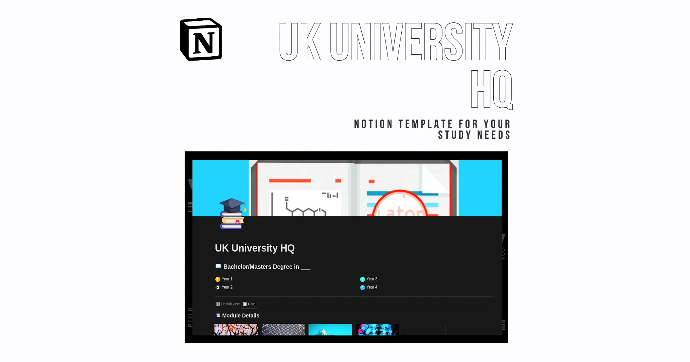
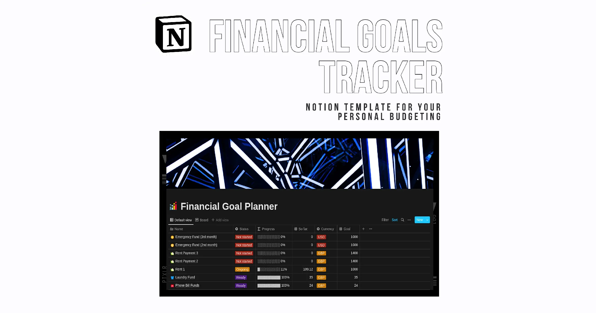
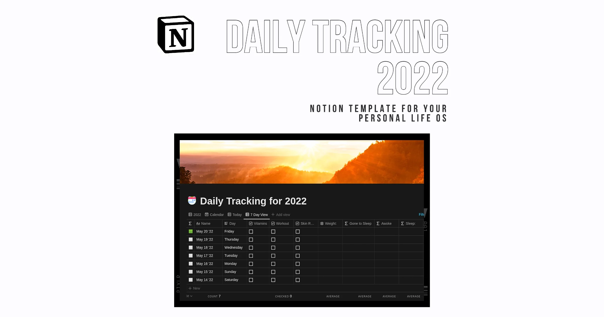
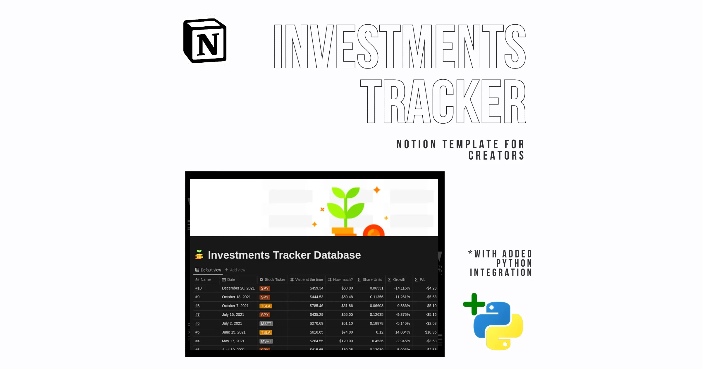

Notion Templates that helped me get my life in Order 🧮
August 17, 2022
I first discovered Notion when I was just 19, in Year 1 of my Engineering course at university.
It was round about time for my exams, and I had to consolidate a ton of papers, notebooks, and study materials to prepare for one heave set of studying. This is when I stumbled upon a video by no other than Ali Abdaal. It pointed to this fascinating notes app that combined databases, simple pages, and was automatically syncing on all devices as you wrote. This app is Notion.
Fast-forward 2-3 years, and now Notion is an integral part of my day-to-day productivity. I have created interconnected study planners with it that helped me move with Distinction into Year 2 and Year 3 of uni, I am tracking my sleep and well-being data on Notion daily, and I am using it to manage my freelancing business. It’s also the place where I’m currently writing this article.
I have recommended Notion to many people so far, and one of the main complaints I hear is that “Notion is simply too complicated”. You can create databases, relations, roll-ups, you can use formulas, progress bars, graphs, and more. This creates a rather steep learning curve that makes many people drop Notion before they even start to unravel the sleek functionality and cool designs they can make.
This is where templates come in. Templates, as you may guess, are a way to preset and configure Notion to carry out a particular set of tasks. These templates can then be duplicated with just a click of a button, and anybody can have the same system in their own respective workspace. In this article, I will provide you with 4 unique templates that have helped me get my life in order. For the impatient among you, here is what you will be getting:
- The University HQ Template
- The Financial Goals and Budgeting Template
- The Daily Tracking Database
- The Investing and Net Worth Dashboard
And now, let’s get started with the template that has helped me manage my academic life so far…
University HQ Template
This Notion template is designed to provide the best experience for organising your academic life in Notion. It is specifically geared towards students in UK Universities, as it was crafted based on my own personal experience studying Biomed. Engineering in Scotland.
On its main HQ page, the template shows you all your modules (or classes, so to say), with your grades, assignments, and corresponding lecturers and contact info.
From then on, on each "Year X" page you will find the specific classes you take each year, alongside all the responsible staff and assignments. What is more, you can add important documentation about your studies, as well as about your accommodation.
The additional Timeline view of the assignments database ensures that you keep track of all your deadlines in a chronological fashion.
You can get the template for FREE by following this link, or by visiting my Notion shop and choosing among the many other professional templates.
Financial Goals Template
This Notion template is a customisable database that will help you record you past, current, and future financial goals. One thing we all know intuitively is that "what gets measured gets done", and this database is built with this in mind.
Visual Progress Bars
With the help of a specially-made Formula property, you will be able to visualise the progress and performance for each of your goals. The progress bars will go up to 100%, after which you will be able to log your spending.
Ex: Let's say you are building up a fund for a new phone you want to buy. After you reach your savings' goal, you will be able to log the spending, so you know how much you have left from the same fund.
Kanban board
With the Kanban board layout you can now easily move your goals from "Not started" to "In-progress", and then to "Finished". In the same view, you will be able to take note of your progress bars.
You can get the template for FREE by following this link, or by visiting my Notion shop and choosing among the many other professional templates.
Daily Tracking Database
This Notion template covers all your universal daily tracking needs. The day entries are already put in - you just need to check the tickboxes and enter your data! Cause let's be real, who would like to create a new page entry every day for some simple data? Now that this is taken care of, you can track your:
- Sleep data (light and deep sleep, perfect for people who use FitBits or Google Fit)
- Weight
- Daily output (as a percentage of the work accomplished)
- Caffeine intake
- Workouts
- Skin routines
As a bonus, you can view the database for just today, for the past 7 days, and for the whole year. You can also add a little note in the "Improvements" property, to see how you can improve a little each day.
You can get the template for FREE by following this link, or by visiting my Notion shop and choosing among the many other professional templates.
Investing and Net Worth Dashboard
This Notion template will help you keep track of all of your investments - personal or business.
You can record:
- The time of purchase of a stock
- The stock ticker (MSFT, TSLA, SPY...)
- The price of purchase
- The overall share percentage
- P/L data
- Current price of your share
- Age of your stock purchase
Bonus:
As an addition, you will be able to automate the process of updating the current price of stocks. It would be highly impractical to keep up to date with every single investment by manually typing its price over and over again.
When you buy this template, you unlock a Python script that you can set up easily (instructions provided in PDF) to run as a background process on your computer and update your financial data. This way, every time you look at your Notion Database, it will have up-to-date information on current market prices, according to Yahoo! Finances (with an accuracy of up to a minute).
You can get the template for the low price of $10 (USD) by following this link, or by visiting my Notion shop and choosing among the many other professional templates.